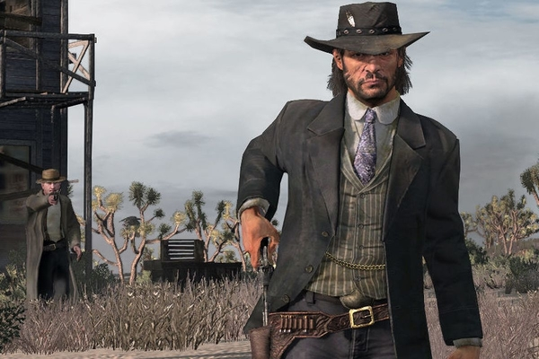

Summary
About
Red Dead Redemption is an action open world video game developed by Rockstar San Diego set in the year 1911, in the ‘old west’ (USA) . We play as John Marston, a former bandit whose family is taken hostage by the government, forcing him to work as a hired gun. Throughout the game, we see our protagonist meet new characters, some of them who will help him and some who will turn into his enemies.We also get to see many characters, that are with us from the beginning of the game, develop. This is possible thanks to the storyline, which goes through many years, allowing us to see characters such as John's son growing up.

Gameplay
Red Dead Redemption includes many features that make it both more complex and interesting : the open world is interactive, with many NPCs having side quests, or the ability to buy/sell objects with the player, and the gunfights are based on a gunslinger’s mechanics, giving you the “deadeye” ability (slows time down while aiming) or the duels. The player also has a constant choice between being a good man or not, showed in a “morality” bar that changes based on your actions.
Similar to the GTA series, it is up to the player in which order and at what time to play the missions. The player must go to each mission location in order to be able to complete them. The game follows the principle of open world gameplay from a third person's perspective. Depending on the area in which the player is staying, different animal species live, including: Bison , grizzly bears and wolves .
Development
Worth it
The game took more than 5 years to be fully developed, becoming one of the most expensive games ever made. But this came with its benefits, since Read Dead Redemption achieved realism rarely seen at this point of video games history . This was due to both the open world itself (the map and its interactions) and the motion capture used for the characters. It lead to the game winning many Game Of The Year awards and ranking among the greatest of the 7th video game generation.
Red Dead Redemption later released more modes that made the game even more diverse. These modes are multiplayer (up to 16 players, and with different activities to play) and "The Undead Nightmare", which is a single player zombie mode that takes place in a modified version of the original map. In 2018, the game got its highly expected predecessor, Red Dead Redemption 2, which is a prequel to the story we saw in the original game.